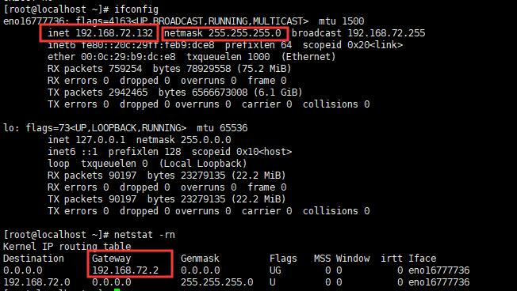
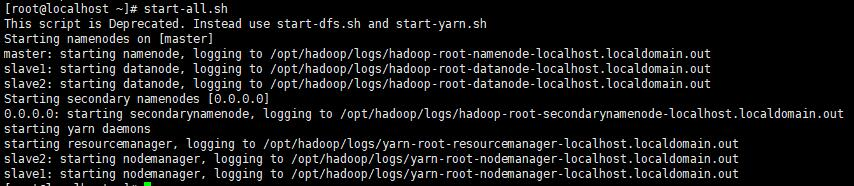
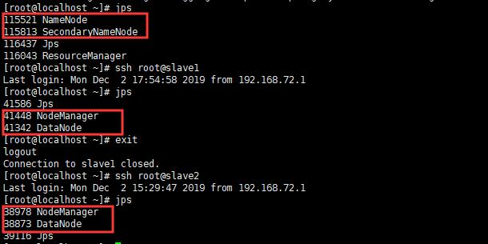
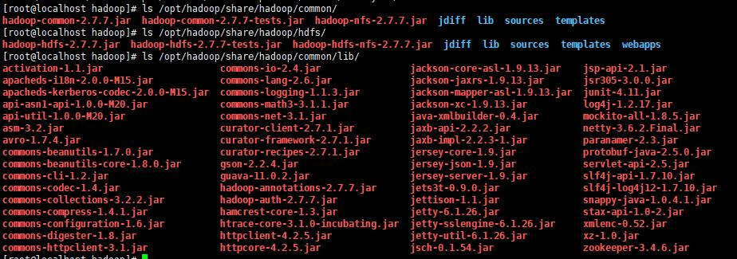
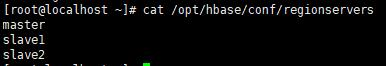
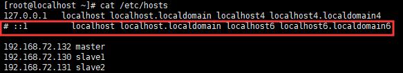
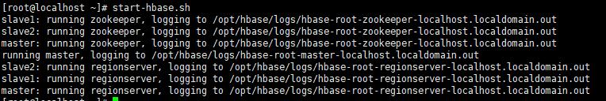
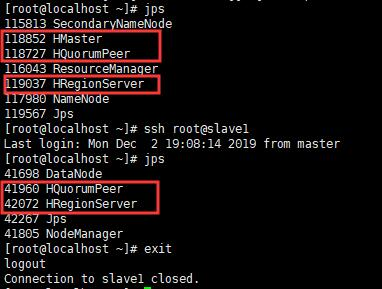
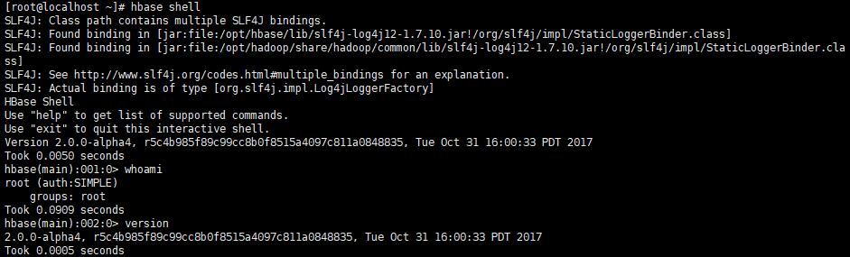

Hadoop+HBase安装配置
最近大数据学习，做实验接触到了hadoop的使用，不过在这个过程中，回想起来真的是一部辛酸史，，我都不知道为了实验踩了多少坑，这里把自己的配置过程和一些该注意的地方整理总结一下，也方便以后看看~
实验环境
- 操作系统：CentOS7（Master * 1，Slave * 2）
- Hadoop版本：2.7.7
- JDK版本：1.8.0_211
- HBase版本：2.0.0-alpha4
emm在整个实验中最好都要使用root用户，不然过程中还是会遇到一些麻烦的地方，，，（辛酸史😭）
设置静态ip及相关网络设置
设置静态ip
首先通过ifconfig和netstat -rn命令查看当前网络状态（其中eno16777736为本机的网卡名字，可以查看到当前的网络IP地址inet、子网掩码netmask和网关gateway）

修改网络IP地址配置文件
1 | vi /etc/sysconfig/network-scripts/ifcfg-eno16777736 |
1 | HWADDR=00:0C:29:B9:DC:E8 |
1 | service network restart # 重启网络服务 |
对实验使用的三台虚拟机分别进行上述操作，设置为静态ip。
配置hosts文件
在hosts文件中，为每台机器设置别名（三台机器都需要）。
1 | vi /etc/hosts |
1 | 127.0.0.1 localhost localhost.localdomain localhost4 localhost4.localdomain4 |
配置SSH免密登录
三台机器都需要，成功后，可以通过ssh root@slave1命令直接登陆另一台机器。
1 | ssh-keygen # 一路回车即可 |
JDK安装
在官网下载相应的JDK版本（注意要下载64位，hadoop-3.x版本要使用jdk1.8，相应的版本对应情况可以在网上直接查到），在虚拟机中解压即可（三台机器都需要配置）。
1 | yum list installed | grep java # 查看系统内自带的Java-jdk程序 |
添加环境变量
1 | vi ~/.bashrc # 我用的时候，/etc/profile有时候会不起作用，所以为了省事都直接写到.bashrc中了 |
添加以下内容
1 | export JAVA_HOME=/opt/jdk/jdk1.8.0_231 |
即使生效
1 | source ~/.bashrc |
Haoop安装
环境配置
下载相应的hadoop版本，解压到/opt/目录
1 | cd /opt |
添加环境变量（在~/.bashrc中，如上）
1 | export HADOOP_HOME=/opt/hadoop |
然后source ~/.bashrc 命令生效
修改 hadoop-env.sh 和 yarn-env.sh文件（相关配置文件都在$HADOOP_HOME/etc/hadoop/目录下）
1 | cd /opt/hadoop/etc/hadoop/ |
添加JAVA_HOME
1 | export JAVA_HOME=/opt/jdk/jdk1.8.0_221 |
文件配置
修改同在该目录下的slave文件，添加两个slave结点
修改core-site.xml文件
1 | <configuration> |
修改hdfs-site.xml 文件，因为副本数量不能超过结点数，设置副本为2，
DataNode的心跳间隔为2S，接口地址为http://master:50070
1 | <configuration> |
修改mapred-site.xml文件
1 | cp mapred-site.xml.template mapred-site.xml |
1 | <configuration> |
修改yarn-site.xml文件
1 | <configuration> |
将配置完成的hadoop发送给slave节点，并给slave节点配置HADOOP_HOME环境变量（如上）
1 | scp -r /opt/hadoop root@slave1:/opt/ |
启动使用
在namenode（master）上格式化文件系统
1 | hdfs namenode -format |

ps：在这一步的时候，如果要反复输入密码，则表示ssh免密登录配置有问题（包括本机的ssh免密登陆）
正常启动之后，可以查看webUI
1 | http://master:50070 |
也可以通过jps命令查看各个节点的相关进程

NameNode：HDFS的命名空间，里面存储着整个HDFS的所有文件的元数据信息，这些信息都会加载到内存中，元数据信息分为两部分，第一部分是文件系统树及整棵树内所有的文件和目录，第二部分是每个文件的各个组成块所在的数据节点信息。
DataNode：文件系统的工作节点，它会根据需要存储并检索数据块，受NameNode调度，并且定期向NameNode发送该DataNode上存储的块的列表信息。
SecondaryNode：辅助NameNode，它是用来定期合并NameNode产生的编辑日志（edits.log）和命名空间镜像文件(fsImage)，以防止edits.log过大。
ResourceManager：负责集群中所有资源的统一管理和分配，它接收来自各个节点（NodeManager）的资源汇报信息，并把这些信息按照一定的策略分配给各个应用程序。
NodeManager：每个节点上的代理，它管理hadoop集群中单个计算节点，包括与ResourceManger保持通信，监督container的生命周期管理，监控每个Container的资源使用（内存、CPU等）情况，追踪节点健康状况，管理日志和不同应用程序用到的附属服务。
如果出现start-all.sh之后，在slave上没有出现datanode的话，可能是因为多次hdfs namenode -format 对文件系统格式化，在每次格式化的时候，都会生成新的clusterID , 而datanode还是保持原来的clusterID，所以无法正常启动datanode。
解决方法：
1 | cat /home/hadoop/tmp/dfs/data/current/VERSION # 可以看到namenode的clusterID |
然后用这个clusterID，替换掉所有slave结点上的该clusterID，然后重新启动即可。
遇到各种问题，学会多查看log日志文件，真的能学到很多~
java api接口
网上有很多api接口使用的教程，我就不再写了，这一部分我在试验过程中没有遇到太大的问题。这里稍微说一点就是使用hadoop提供的java api接口的时候，需要导入的jar包如下（即common下3个，hdfs下3个和conmmon/lib下所有）:

HBase安装
环境配置
下载相应的hbase版本，因为仅是实验使用，所以没有在单独下载zookeeper，使用的hbase中自带的zookeeper，解压到/opt/目录
1 | sudo tar -zxvf hbase-2.0.0-alpha4-bin.tar.gz |
添加环境变量（在~/.bashrc中，如上）
1 | export HBASE_HOME=/opt/hbase |
然后source ~/.bashrc 命令生效
文件配置
修改hbase-env.sh文件（仅修改下面两项即可）
1 | vi /opt/hbase/conf/hbase-env.sh |
1 | export JAVA_HOME=/opt/jdk/jdk1.8.0_221 # jdk安装路径 |
修改hbase-site.xml文件
1 | vi /opt/hbase/conf/hbase-site.xml |
1 | <configuration> |
修改regionservers文件

在完成上面的所有修改之后，将hbase文件传输到各个slave节点上。
1 | scp -r /opt/hbase root@slave1:/opt/ |
同步服务器时间
在使用hbase的时候，一定要保证各台机器的时间是同步的，不然hbase会出现很多错误。
1 | yum -y install ntp ntpdate # 安装ntpdate工具 |

启动使用
1 | start-hbase.sh # 启动habse（需要先启动hadoop） |

正常启动之后，可以查看webUI
1 | http://master:16010 |
ps：我当时做到这一步的时候，遇到了一个问题，是webUI可以正常访问，但是网页上Region Sever下面是空的，没有正常显示slave结点，日志报错部分如下：
1 | Call to localhost/127.0.0.1:16000 failed on connection exception |
我的问题是因为三台机器的主机名始终为localhost，虽然已经修改host文件，但是并没有生效，在修改完主机名之后，问题消失。
也可以通过jps命令查看各个节点的相关进程

java api接口
使用hadoop提供的java api接口的时候，需要导入/opt/hbase/lib路径下的所有jar包。
hbase使用
除了可以使用java api接口外，也可以使用hbase提供的shell命令
1 | hbase shell # 进入hbase shell |

总结
虽然在实验过程中，遇到了很多麻烦，但现在回想起来很多都是因为不理解导致的，如果能够明白每一项配置的作用和参数含义的话，其实整个实验都会顺利很多，但也正是在这个过程中不断学习进步的。
继续加油啊~